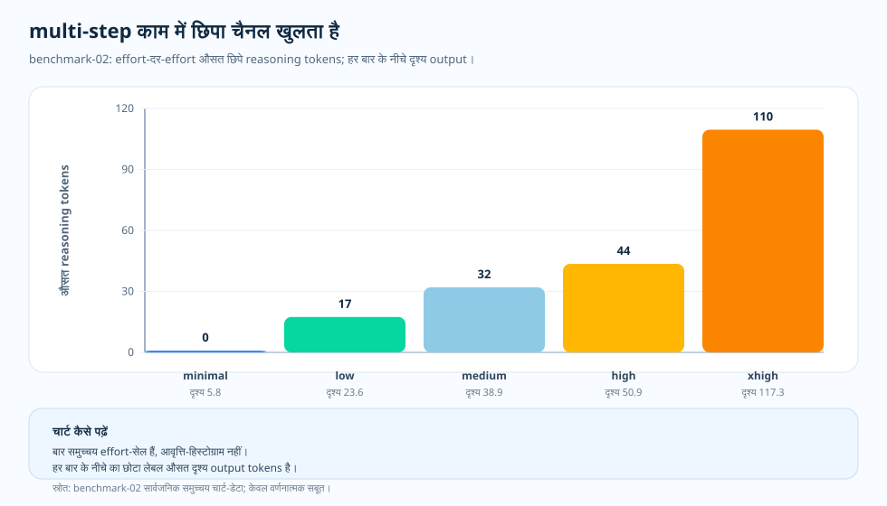

विषय-लेख · छिपी बिलिंग सतह
अदृश्य reasoning tokens: बिल का वह हिस्सा जो जवाब में दिखता नहीं
reasoning migration के बाद — या किसी ने reasoning effort बढ़ा दिया हो — जवाब फिर भी छोटा और साधारण दिख सकता है। दिखने वाले text से यह पता नहीं चलता कि ख़र्च बढ़ गया है। लेकिन उसी workload पर finance और telemetry बड़ा बिल दिखाते हैं। तब सीधा सवाल उठता है: जब जवाब लंबा नहीं हुआ, तो लागत कहाँ गई?
छिपे खर्च को क्यों खोला
लगभग हर टीम यही करती है। किसी request की लागत सोचते समय नज़र सबसे पहले उसी चीज़ पर जाती है जो दिखाई देती है — जवाब की लंबाई। छोटा जवाब सस्ता लगता है, लंबा जवाब महँगा। pre-reasoning दौर में यह सहज अंदाज़ा ज़्यादातर मामलों में काफ़ी काम का था।
इससे एक साफ़ जाँच बनती है। शायद visible answer की लंबाई ही सचमुच ख़र्च समझाती हो, और बड़ा बिल बस थोड़े लंबे जवाबों में छिपा हो जिन पर किसी ने ध्यान न दिया हो। या फिर reasoning model इस सहज समझ को तोड़ देता हो, और लागत उन hidden reasoning tokens में चली जाती हो जिन्हें उपयोगकर्ता कभी पढ़ता ही नहीं। बदलाव कहाँ हो रहा है, यह chart साफ़ कर सकता है।
इसलिए हमने इसे अलग-अलग देखा। हर billed request को input, cached input, visible output और hidden reasoning में बाँटा, और मापे गए इस छोटे factual case में उसी breakdown को लागत, quality और latency के साथ रखा। नतीजा साफ़ है। visible output effort के स्तरों में सिर्फ़ क़रीब 12.7 से 17.9 tokens तक बदला, जबकि hidden reasoning क़रीब 3.7 से 311.5 tokens तक पहुँचा। लागत और latency hidden channel के साथ बढ़े, लेकिन paired quality chart में वैसी बढ़त नहीं दिखी। नीचे का one-pager यही बात एक फ़्रेम में कह देता है, और उसके बाद के खंड मापा हुआ विवरण जोड़ते हैं।

प्रश्न
अगर जवाब-पाठ छोटा ही रहा, तो अतिरिक्त लागत कहाँ से आई?
साक्ष्य
benchmark-01 के token composition, लागत और latency charts को एक ही evidence chain की तरह पढ़ें।
नतीजा
दिखने वाले जवाब की लंबाई में बहुत कम बदलाव आया, लेकिन hidden reasoning tokens effort के स्तर बढ़ने के साथ बढ़ते गए।
निर्णय
visible answer छोटा रहे तब भी reasoning tokens को telemetry में track करें। hidden-token budget को बिल का हिस्सा मानें, भले जवाब उसे कभी न दिखाए।

जवाब छोटा था, भीतर का काम नहीं
benchmark-01 में असली हैरानी यह नहीं कि extra-high effort की लागत ज़्यादा थी — यह तो अपेक्षित था। ध्यान देने वाली बात यह है कि उस बढ़ोतरी का बहुत छोटा हिस्सा ही अंतिम जवाब में दिखा। minimal effort पर visible output औसतन 12.7 tokens और reasoning tokens औसतन 3.7 tokens थे। extra-high effort पर visible output औसतन 17.9 tokens और reasoning tokens औसतन 311.5 tokens थे।
यानी पाठक जो text देखता है, वह इस बात का अच्छा proxy नहीं कि कितनी computation पर खर्च हुआ। छोटा जवाब बड़े reasoning budget को छिपा सकता है, और अगर साथ वाला quality chart न हिले, तो ऊपर-ऊपर ठीक दिखने वाला जवाब भी आर्थिक रूप से खराब सौदा हो सकता है।
चार्ट कैसे पढ़ें
ये bar अलग-अलग request का histogram नहीं, बल्कि aggregate model+effort combinations हैं। X-axis reasoning effort setting दिखाता है। Y-axis प्रति request औसत reasoning tokens दिखाता है। हर bar के नीचे दिया छोटा label उसी combination का औसत visible output बताता है।
chart को नीचे से ऊपर पढ़ें। पहले देखें कि क्या visible output में इतना बदलाव आया कि बिल समझाया जा सके। फिर hidden reasoning वाले bar से तुलना करें। इस केस में जवाब की लंबाई नहीं, भीतर हुआ काम असली वजह है।
मूल चार्ट क्या जोड़ता है
token composition mechanism समझाता है, लेकिन अकेले वही काफ़ी नहीं। cost chart बिल बढ़ना दिखाता है। quality chart पूछता है कि उससे जवाब सचमुच बेहतर हुआ या नहीं। latency chart उपयोगकर्ता की wait time दिखाता है। तीनों को साथ पढ़ने पर तस्वीर साफ़ होती है: इस छोटे factual case में internal tokens बढ़े, spend बढ़ा, latency बढ़ी, और quality में वैसी बढ़त नहीं आई।
इसका मतलब क्या है
सबक़ यह नहीं कि reasoning tokens बुरे हैं। reasoning model का मतलब ही यही है कि कुछ internal work हो। असली सबक़ यह है कि उस work का काम होना चाहिए। अगर task सिर्फ़ छोटा factual answer माँगता है, तो internal reasoning चुपचाप budget leak बन सकती है। लेकिन अगर task multi-step resolution माँगता है, तो यही tokens quality gain की वजह भी बन सकते हैं।
इसीलिए overview essay लागत, quality, latency और token composition को साथ रखता है। पूरा बिल जवाब में दिखता नहीं है।
साक्ष्य की तालिका
docs/blog/data/chart-data/token-composition/benchmark-01/tokens.json
से आते हैं; इन्हें evidence dashboard
(served chart data) में पढ़ें।

| साक्ष्य-पंक्ति | मीट्रिक A | मीट्रिक B | क्या जुड़ता है |
|---|---|---|---|
| Minimal effort | visible output 12.7 tokens | reasoning tokens 3.7 | जवाब छोटा, hidden budget भी बहुत छोटा। |
| Extra-high effort | visible output 17.9 tokens | reasoning tokens 311.5 | text अब भी छोटा, लेकिन internal budget बहुत बड़ा। |
| Paired quality | 1.88 at minimal | 1.78 at extra-high | इस केस में hidden work से quality नहीं बढ़ी। |
| Latency | 1.1s at minimal | 3.1s at extra-high | इस hidden work ने wait time भी बढ़ाई। |
स्रोत और साक्ष्य-सीमा
ऊपर दिया हर number इस repository की किसी public artifact तक पहुँचा जा सकता है, और हर लागत claim dated pricing snapshot पर आधारित है। इस लेख की सुझाई accounting habit — telemetry में reasoning-token budget को अलग से visible रखना — इसकी अपनी operational inference है। नीचे की दो tiers दिखाती हैं कि documented input कहाँ तक है और inference कहाँ से शुरू होता है।
- [1] Tier 1 — कार्यप्रणाली अनुबंध: यह repository,
docs/05-methodology.md(v1.0)। प्रति configuration N = 20 लिखे गए samples, R = 3 repeats, और केवल public aggregate case। chart-reading prose इसी fixed stance को मानकर चलती है; error bars confidence intervals नहीं, standard deviation हैं, और N = 20 पर p-values का दावा नहीं किया गया है। - [2] Tier 1 — PAYG pricing snapshot: प्रति request लागत का framing इस repository की
pricing/azure-openai-payg-2026-05.yamlपर आधारित है — यह Azure OpenAI के public pricing page का 2026-05-19 का frozen snapshot है। list pricing बदलेगी तो hidden-token बिल भी बदलेगा। - [3] Tier 2 — benchmark-01 case measurement: यह repository,
benchmarks/01-short-factual/analysis.json। यही 3.655172 से 311.474576 reasoning-token shift, 12.672414 से 17.881356 visible-output movement, 1.87931 से 1.779661 quality score, और 1112.798745 ms से 3088.001225 ms latency stretch का source है। - [4] Tier 2 — rendered chart डेटा: यह repository,
docs/blog/data/chart-data/token-composition/benchmark-01/tokens.jsontoken decomposition का source है। इसेdocs/blog/data/chart-data/cost-curves-effort/benchmark-01/cost-per-request.json,quality.json, औरlatency.jsonके साथ पढ़ने पर evidence chain पूरी होती है: hidden tokens बढ़े, बिल बढ़ा, wait बढ़ी, लेकिन quality में वैसी बढ़त नहीं आई। - [5] Evidence dashboard: render किया गया benchmark-01 token composition chart इन्हीं artifacts का auditable रूप है।
यह मापा गया हिस्सा क्या साबित करता है और क्या नहीं: इस छोटे factual case में visible output लगभग स्थिर रहा, जबकि internal reasoning effort के स्तर बढ़ने के साथ बढ़ी। लेकिन इससे यह साबित नहीं होता कि multi-step, tool-agent, या synthesis work में भी hidden-token shape यही होगी। हर topic का अपना measurement है।
इस साक्ष्य से क्या निष्कर्ष निकलता है
reasoning-token budget जवाब में भले न दिखे, telemetry में उसे अलग से दिखना चाहिए। यही बुनियादी accounting habit इस topic series का मुख्य व्यावहारिक निष्कर्ष है।
व्यावहारिक नियम
- हर request में reasoning tokens को visible output के साथ log करें, सिर्फ़ total tokens के रूप में नहीं।
- short answer के बावजूद internal लागत बड़ी हो सकती है, इसलिए hidden-token budget पर alert रखें।
- इस workload shape पर paired quality chart में बदलाव दिखने के बाद ही effort बढ़ाएँ।
व्यावहारिक नियम: visible answer छोटा रहे तब भी telemetry में reasoning tokens मापें — hidden-token budget बिल का वही हिस्सा है जो जवाब कभी नहीं दिखाता।
आगे: Multi-step काम: जब रीज़निंग आज़माना वाकई फ़ायदे का होता है — extra reasoning कब सिर्फ़ बिल नहीं बढ़ाती, बल्कि quality सचमुच बेहतर करती है?